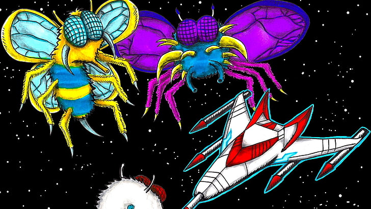

About Galaga
Galaga is a fixed shooter. The player mans a lone starfighter at the bottom of the screen, which must prevent the Galaga forces from destroying all of mankind. The objective of each stage is to defeat all of the Galaga aliens, which will fly into formation from the top and sides of the screen. Similar to Galaxian, aliens will dive towards the player while shooting down projectiles; colliding with either projectiles or aliens will result in a life being lost.
Atop the enemy formation are four large aliens known as the "Boss Galaga", which take two shots to destroy. These aliens can use a tractor beam to capture the player's ship, returning with it to the top of the formation and costing the player a life. Should additional lives remain, the player has an opportunity to shoot down the Boss Galaga holding the captured ship. Shooting it down as it dives towards the player will result in the captured ship being rescued, and it will join the player's ship, transforming it into a "dual-fighter" with additional firepower and a larger hitbox. However, destroying a Boss Galaga with a captured ship while it is in formation will instead cause the fighter to turn against the player and act as an alien. The ship will return in a later level as part of the formation.
Some enemies can morph into new enemy types with different attack patterns, with one even taking the form of the Galaxian Flagship. Stages are indicated by emblems located at the bottom-right of the screen. Enemies become more aggressive as the game progresses, increasing their number of projectiles and diving down at a faster rate. The third stage and every fourth thereafter is a bonus stage, where the aliens fly in a preset formation without firing at the player.